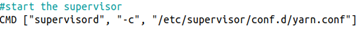

Capítulo 4. Arquitectura de Contenedores para el Despliegue del Entorno Big Data
Arquitectura de Contenedores para el Despliegue del Entorno Big Data
Arquitectura de Contenedores para el Despliegue del Entorno Big Data
El ResourceManager es el componente principal de YARN (Yet Another Resource Negotiator), el sistema encargado de administrar los recursos computacionales del clúster Hadoop.
Su responsabilidad consiste en coordinar la ejecución de las aplicaciones distribuidas, asignando memoria y capacidad de procesamiento a las tareas que se ejecutan en los distintos nodos del clúster. Cuando un usuario lanza un trabajo MapReduce, el ResourceManager decide dónde deben ejecutarse las tareas, planifica su ejecución y supervisa el uso eficiente de los recursos disponibles.
Gracias a este mecanismo, múltiples aplicaciones pueden compartir la infraestructura Hadoop de forma equilibrada, optimizando el rendimiento global del sistema y garantizando un uso eficiente de la CPU y la memoria disponibles.
La construcción comienza utilizando como punto de partida la imagen hadoop-base, que ya incorpora Ubuntu, Java, Hadoop, Python, Jupyter Notebook y el resto de componentes comunes del clúster.

Figura. Imagen Docker base utilizada para construir el ResourceManager.
A continuación se copia al contenedor el fichero de configuración específico del servicio, encargado de iniciar automáticamente el ResourceManager mediante Supervisor.
| Archivo | Descripción |
|---|---|
| yarnmanager.conf | Configuración del servicio ResourceManager. |
| Supervisor | Gestión automática del proceso. |
Una vez finalizada la configuración, el contenedor utiliza Supervisor como gestor de procesos para iniciar automáticamente el servicio ResourceManager cuando el contenedor arranca.

La imagen Docker del ResourceManager constituye el núcleo del sistema YARN. Gracias a este componente es posible distribuir de forma eficiente los recursos del clúster entre las distintas aplicaciones Big Data, garantizando un uso óptimo de la infraestructura y permitiendo la ejecución paralela de múltiples trabajos sobre Hadoop.
El código completo utilizado para construir esta imagen puede consultarse en el Anexo 7.1, apartado 7.1.3 Dockerfile ResourceManager (YARN).